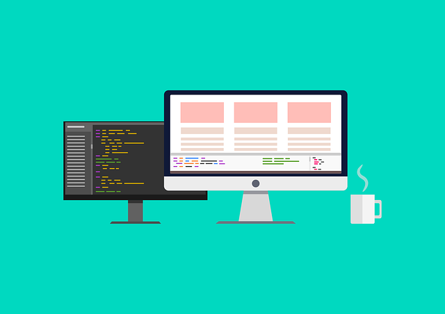

Assignment 1
This is my first experience in creating a web page and sharing with the world. It was unbelievable that I can do that as a person coming from a non-technical background. After all, the learning hasn’t been as difficult as I thought. Hopefully, I can do more interesting things with the newly acquired skills.
My current design for the first assignment is based on one main idea: How can I make my creative works more accessible and inspiring for other people? That’s why I have chosen a simple horizontal navigation bar with the current navigation option highlighted and the paragraph heading displayed in H1 tag.
Simplicity is important but amusement, the entertaining impact my works create, is equally so. I still have to work harder on both. They are design attributes that can delight people and make them willing to see my works more.
More details about my design can be found here.